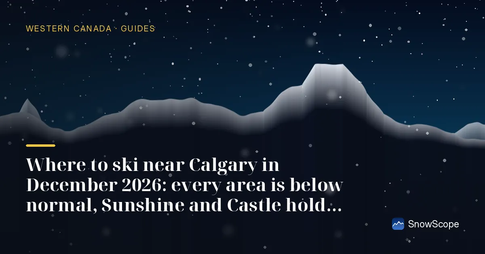
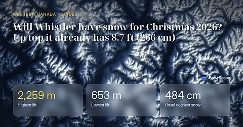
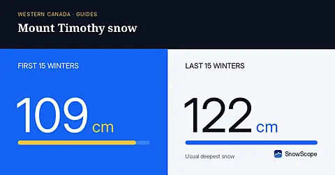

Where to ski near Calgary in December 2026: every area is below normal, Sunshine and Castle hold the most
All five ski areas within reach of Calgary start December below a normal year, so pick the high ones: Banff Sunshine and Castle Mountain hold the most snow today with 9 in (22 cm) and 9 in (22 cm) on their upper slopes. Lake Louise has 7 in (19 cm), and the dry weekend ahead adds almost nothing.
See the live snow forecast for Calgary in the SnowScope appSnow depth, powder alerts and the 3D map, free.
The Banff three: Sunshine, Lake Louise, Norquay
Sunshine Village, about 90 minutes west, has 9 in (22 cm) up top; at 7,133 ft (2,174 m) that is 6 in (15 cm) against a usual 20 in (50 cm). Lake Louise, farther along the Trans-Canada, shows 7 in (19 cm) and 5 in (12 cm) at mid-mountain where 21 in (54 cm) is normal. Norquay, right above Banff town and the closest of the three, has 8 in (20 cm); its night skiing makes it the easiest after-work option.
Over the past seven days Sunshine and Castle each picked up about 2 in (6 cm); the coast storms that buried Whistler barely crossed the Divide.
| Ski area | Upper slopes today | Mid: now / normal | Top |
|---|---|---|---|
| Sunshine Village | 9" | 6" / 20" | 8,812 ft (2,686 m) |
| Castle Mountain | 9" | 4" / 14" | 7,411 ft (2,259 m) |
| Lake Louise | 7" | 5" / 21" | 8,671 ft (2,643 m) |
| Mt. Norquay | 8" | 3" / 15" | 6,867 ft (2,093 m) |
| Nakiska | 8" | 4" / 12" | 7,434 ft (2,266 m) |
Kananaskis: Nakiska
Nakiska, the closest real ski hill to the city at about an hour, has 8 in (20 cm). It relies on snowmaking early in the season, and its natural snow is the thinnest of the group: a usual Christmas brings 16 in (41 cm) at 6,178 ft (1,883 m), and only 41% of 46 winters had 50 cm (20 in) by New Year.
South: Castle Mountain
Castle, near Pincher Creek, is a longer drive but often catches storms from the southwest that miss Banff. It has 9 in (22 cm) today and a usual Christmas depth of 23 in (58 cm) at 6,017 ft (1,834 m). Opening dates and terrain are on the Castle Mountain snow page.
Choosing by drive time
From Calgary, Nakiska is the closest at about an hour, Norquay and Sunshine follow at around an hour and a half, Lake Louise adds another forty minutes and Castle is a southern trip of about three hours. With every area this thin, the extra drive buys snow only if it buys height: Sunshine's top lifts reach 8,812 ft (2,686 m) and Lake Louise's 8,671 ft (2,643 m), compared with 6,867 ft (2,093 m) at Norquay.
A practical plan for early December is Sunshine on Saturday, when the high terrain gives the most runs, and Norquay for a short evening session in the week. Once the base builds, Lake Louise's back bowls are usually the first big terrain to open.
Castle Mountain is the exception to the closer-is-better rule: it sits in a different snow belt and often has its best days when Banff is dry. It is also the least crowded of the five on weekends. With 9 in (22 cm) on the upper slopes today it is level with Sunshine, and its usual Christmas depth of 23 in (58 cm) is close to the Banff areas'. For a weekend away rather than a day trip, it is worth a look.
What December usually adds
The Banff areas are dependable by the holidays. Lake Louise usually has 31 in (78 cm) at 7,037 ft (2,145 m) on Christmas Day and reached 50 cm by New Year in 93% of winters; Sunshine shows 28 in (72 cm) and 89%. Even this year's slow start leaves plenty of time for that.
Daily numbers: Sunshine Village, Lake Louise, Norquay.
Tips for skiers
- This weekend: Sunshine or Lake Louise for the most terrain, Norquay for a short day.
- Leave early on Saturdays; the Trans-Canada through Canmore is busy on the first good ski weekends.
- Check the Parks Canada road report for the Icefields-area roads and winter tires rules before driving.
- Compare more areas on the Western Canada snow hub and the three-week outlook.
About these numbers
Snow numbers: SnowScope's snow map and forecast for today, and our record of 46 past winters at each resort (an estimate for the area, not the resort's own report).
Cite this report
For research, teaching or the press: the numbers and charts are free to reuse under CC BY 4.0 with this citation.
SnowScope (2026), Where to ski near Calgary in December 2026: every area is below normal, Sunshine and Castle hold the most, https://snowscope.app/blog/en/2026/11/where-to-ski-near-calgary-december-2026-banff-sunshine-lake-louise-nakiska.html, accessed 2026-11-27
SnowScope (Atlas Labs). (2026, November 27). Where to ski near Calgary in December 2026: every area is below normal, Sunshine and Castle hold the most. SnowScope snow reports. https://snowscope.app/blog/en/2026/11/where-to-ski-near-calgary-december-2026-banff-sunshine-lake-louise-nakiska.html
BibTeX
@misc{snowscope2026wheretoskinearcalgarydec,
author = {{SnowScope (Atlas Labs)}},
title = {Where to ski near Calgary in December 2026: every area is below normal, Sunshine and Castle hold the most},
year = {2026},
month = nov,
howpublished = {\url{https://snowscope.app/blog/en/2026/11/where-to-ski-near-calgary-december-2026-banff-sunshine-lake-louise-nakiska.html}},
note = {Published 2026-11-27 18:53 UTC; accessed 2026-11-27}
}· CC BY 4.0 · Methods, data and tools →
Follow Calgary
Free: a message when fresh snow is coming, and the forecast every morning.
More snow reports

Whistler Blackcomb's upper slopes hold 8.7 ft (266 cm) after a 4.6 ft (141 cm) three-day storm. What 46 winters say about Christmas, and why the valley is the only question.

Mount Timothy near 100 Mile House: today's snow, the forecast, how far behind a normal year it is, and what December usually brings to this Cariboo community hill.

Marmot Basin's snow today, the next days, and why this start is unusual for one of Canada's most reliable early-season mountains.